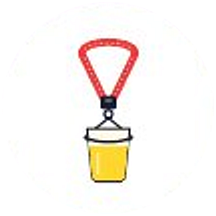
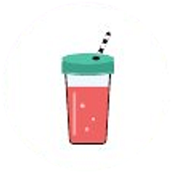
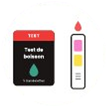
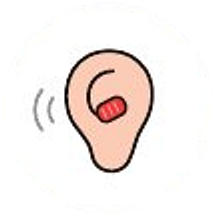
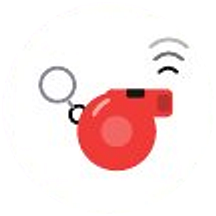
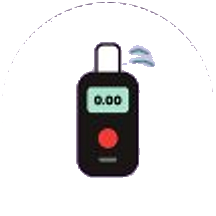

📅 Date
Vendredi 12 février 2027
L'Asso Gala de l'IUT de Lille présente
12 février 2027 19h30 – 3h Fort de Mons
Tout ce que vous devez savoir pour la soirée.
Vendredi 12 février 2027
20h00 – 03h00
Ouverture des portes à 19h30
Salle des fêtes du Fort
4 rue de Normandie, 59370 Mons-en-Barœul
Tenue de soirée
Une seule chose à prévoir : ta plus belle tenue.
Des concerts pour lancer la soirée, puis les DJ jusqu'à 3h.
Toute la nuit, pour tout le monde.
Directement sur ton bracelet, avec les billets « alcool ».
Pour ton manteau et tes affaires.
Vers Cité Scientifique, Lille, Roubaix et Tourcoing. Voir les horaires
À ta sécurité ! 🥂
Sers-toi, c'est gratuit ! Prends ce dont tu as besoin, pour ce soir et tes prochaines sorties.

Tour de cou porte-gobelet
Protège-verre
Test de boisson
Bouchons d'oreilles
Sifflet anti-agression
Éthylomètre sur placeDes responsables sécurité sont joignables facilement et en permanence, et des livrets d'information et de la documentation sont disponibles sur le stand.
Les places sont limitées. Réserve dès l'ouverture pour garantir ton accès à la soirée la plus attendue de l'année.
18 €/ personne
Le plus choisi
Université de Lille
20 €/ personne
25 €/ personne
Une carte étudiante et/ou une pièce d'identité sera demandée à l'entrée.
Les billets ne sont ni échangeables ni remboursables, sauf en cas de force majeure.
Salle des fêtes du Fort
4 rue de Normandie, 59370 Mons-en-Barœul
Temps de trajet en métro jusqu'à Fort de Mons
Le Gala est ouvert aux étudiants de l'Université de Lille et à leurs invités, ainsi qu'aux personnels.
Oui, les mineurs de plus de 16 ans peuvent venir avec une autorisation parentale signée. Ils doivent obligatoirement prendre le billet « Étudiant sans alcool / Mineur » : l'alcool leur est strictement interdit au bar.
Oui, une tenue de soirée correcte est exigée. Le thème est « Nuit étoilée » : bleu nuit, doré, paillettes… on vous encourage vivement à jouer le jeu !
Votre billet (le QR code reçu par mail, sur votre téléphone ou imprimé) et une carte étudiante et/ou une pièce d'identité.
Oui, le vestiaire est inclus dans tous les billets. Vous pourrez y déposer vos manteaux et sacs en toute sécurité.
Au bar : bière rouge, bière blonde, IPA, mousseux, ainsi que divers sodas et sirops. Les softs sont à volonté pour tout le monde.
Oui, des options végétariennes sont proposées au buffet pour satisfaire tous les régimes alimentaires.
Après le scan de votre billet, un bénévole vous remet un bracelet. Avec un billet « alcool », il contient vos 4 boissons alcoolisées : au bar, vous le présentez et une boisson est décomptée. Les softs restent à volonté. Gardez-le au poignet toute la soirée.
Allez voir un responsable près du bar avec votre billet : il peut bloquer l'ancien bracelet et vous en remettre un nouveau avec les boissons qu'il vous restait.
Non, aucun paiement n'a lieu pendant la soirée : les 4 boissons alcoolisées sont comprises dans le billet, et les softs sont à volonté.
Rendez-vous à la Safe Zone ou parlez à n'importe quel bénévole ou agent de sécurité : une équipe de secouristes est présente toute la nuit.
Le Gala se déroule à la Salle des fêtes du Fort, à Mons-en-Barœul. Le plus simple : le métro ligne 2, arrêt Fort de Mons. Voir l'accès
Les navettes retour partent de la salle de 00h15 à 03h15 vers Cité Scientifique, Gare Lille Flandres + République, Roubaix centre et Tourcoing centre. Voir les horaires
Non, elles sont incluses dans tous les billets, pour que tout le monde rentre en sécurité !
Si vous rencontrez la moindre difficulté lors de votre réservation, écrivez-nous à gala.iutlille@gmail.com.
Non, les ventes se font exclusivement sur la billetterie officielle en ligne.
Aucun remboursement n'est possible avant ou après la soirée, sauf en cas de force majeure. Seules les erreurs de paiement (places en double) peuvent être remboursées.
Non, la revente n'est pas autorisée : les billets sont strictement nominatifs et ne peuvent être utilisés qu'une seule fois.